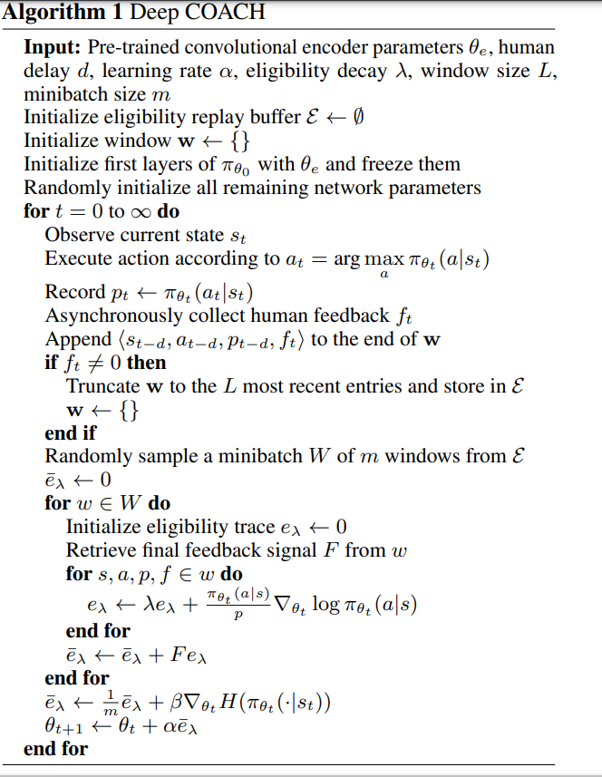

Algorithm Example: DeepCoach
DeepCoach is one famous reinforcement learning algorithm that trains a policy with human feedbacks. In this tutorial, we give some basic explanation about the algorithm and show the detailed implementation by torchrl. If you are interested in the algorithm and would like to read more, please refer to the paper, in this part of the documentation we aim to provide researchers an illustration on how to use crew for their own algorithms.
DeepCoach Basics
The pivotal assumption behind DeepCoach is that human feeback \(f_{t}\) at timestep \(t\) approximates the discounted return \(R_{t}=\sum_{n=t}^{\infty}\gamma^{n-t}r_{n}\) that value functions usually approximate in standard reinforcement learning setting. Bellmen equations, which propagate local rewards through the state space, become unnecessary under this assumption, since human feedbacks have already summarized the future rewards into a single value \(f_{t}\).
A natural idea following this assumption, then would be to apply the human feedback to direct policy gradients. Namely, to replace \(R_{t}\) in \(\mathbb{E}_{\pi}[R_{t}\nabla_{\theta}ln\pi_{\theta}(a|s)]\) with \(f_{t}\), so that we get the central update rule \(\theta\leftarrow\theta+\mathbb{E}_{\pi}[f_{t}\nabla_{\theta}ln\pi_{\theta}(a|s)]\).
There exist more considerations beyond the update rule to make DeepCoach more practical in real applications. Among them are Importance Sampling for correcting policy inconsistency and Eligibility Trace for solving sparse human feedbacks.
With Importance Sampling, we correct the inconsistency between the policy used to collect experience and the policy that we are currently updating. More precisely, the update rule is adapted to \(\theta\leftarrow\theta+\mathbb{E}_{\pi}[\frac{\pi_{\theta}(a|s)}{\pi(a|s)}f_{t}\nabla_{\theta}ln\pi_{\theta}(a|s)]\), where \(\pi\) is the policy that was used when collecting the transition \((s, a, s', f_{t})\), \(\pi_{\theta}\) is the policy whose parameters we are updating currently. The purpose is to tranfer the expectation with respect to the old policy \(\pi\) to the expectation with respect to the current policy \(\pi_{\theta}\), namely,
so that we are updating the policy according to the correct trajectory distribution introduced by the current policy.
Eligibility Trace, on the other hand, solves the issue that human feedbacks are usually scarce in a training trial. The idea is to utilize a feedback not only at the transtion where that feedback is given, but also at the previous transtions leading to the feedback. Intuitively, the purpose is to inform a trajectory rathen than a single transition at the end of the trajectory. Thus, the basic element stored in replay buffer for DeepCoach is not a single transition \((s, a, s', f_{t})\), but a window consisting of successive transtions that lead to a human feedback, \([(s_{t-l}, a_{t-l}, s_{t-l+1}, 0), (s_{t-l+1}, a_{t-l+1}, s_{t-l+2}, 0),..., (s_{t}, a_{t}, s_{t+1}, f_{t})]\), where \(l\) is a hyperparameter controlling the length of the window. Therefore, the update rule with respect to a window then becomes,
where \(\lambda\) is a discount factor determining how much weights we would like to give to previous transitions.
For a complete algorithm discription, please refer to the following pseudocode.

In summary, DeepCoach is a policy-based reinforcement learning algorithm. It utilizes policy gradients to update its policy, while applying human feedbacks to replace discounted cumulative rewards that a critic usually approximates in Actor-Critc paradigm.